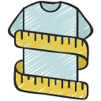

Products I built


Three products, built and shipped solo. Open one for the reasoning, the evidence and a demo you can use.

FitCheck ↗
A calculator, not a guess. It compares the fit a garment was designed for with the fit you’d actually get, using the size chart already on the page.

Savio ↗
An AI companion for the one question budget apps never answer: can I afford this, right now? It reasons over your real income, commitments and goals.

Amazon Discovery Intelligence ↗
Reads a week of customer complaints and says what to work on Monday. Every claim links to the review behind it, and it says plainly what it cannot see yet. What to work on Monday →